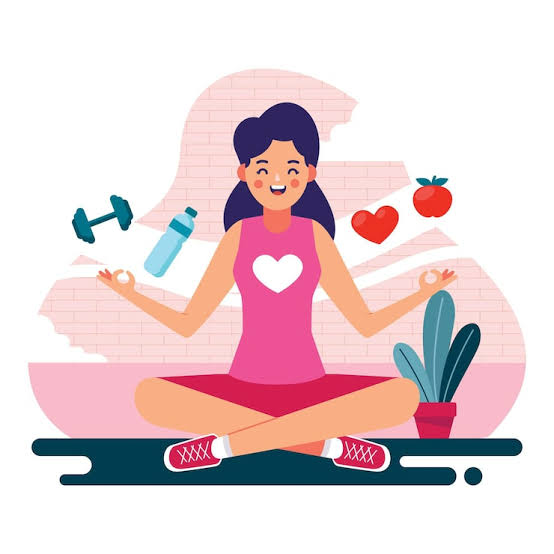

Autocuidado

El autocuidado es el conjunto de acciones que realizamos para cuidar nuestra salud y bienestar. Pues se incluye mantener una buena higiene personal, alimentarnos de manera adecuada, descansar lo suficiente, realizar actividad física y cuidar nuestra salud emocional. También, es importante reconocer cuando algo nos afecta y buscar ayuda de una persona de confianza o de un profesional.
El autocuidado en la salud sexual es una parte fundamental del bienestar integral de todas las personas, ya que comprende las acciones, los hábitos y las decisiones que permiten cuidar el cuerpo, las emociones y la salud en relación con la sexualidad. Este tipo de cuidado consiste en conocer nuestro cuerpo, comprender sus cambios, mantener una higiene íntima adecuada, informarnos sobre la prevención de enfermedades, reconocer nuestros derechos y tomar decisiones responsables sobre nuestra vida sexual. El autocuidado también significa aprender a escuchar nuestras necesidades, respetar nuestros límites personales y comprender que cada persona tiene derecho a decidir libremente sobre su cuerpo, sin recibir presiones, amenazas ni discriminación. Practicarlo desde una edad temprana ayuda a desarrollar hábitos saludables, fortalecer la autoestima y adquirir conocimientos que permiten prevenir riesgos y mantener una relación más consciente y respetuosa con nuestra propia sexualidad.
Uno de los aspectos más importantes del autocuidado sexual es el conocimiento del propio cuerpo. Conocer la anatomía de los órganos sexuales y reproductivos permite comprender mejor su funcionamiento, identificar los cambios naturales que ocurren durante las diferentes etapas de la vida y reconocer cuándo una molestia puede necesitar atención médica. Durante la pubertad, por ejemplo, se producen cambios físicos y hormonales como el crecimiento del vello corporal, el desarrollo de los órganos sexuales, la menstruación, las erecciones y las eyaculaciones. Estos cambios forman parte del desarrollo humano y pueden presentarse en momentos diferentes en cada persona. Informarse correctamente sobre ellos ayuda a disminuir los temores, resolver dudas y comprender que no todos los cuerpos se desarrollan de la misma manera. Además, conocer nuestro cuerpo nos permite reconocer señales que no deben ignorarse, como el dolor persistente, las lesiones, la picazón intensa, las secreciones inusuales o los cambios que generan preocupación, ante los cuales es recomendable buscar orientación profesional.